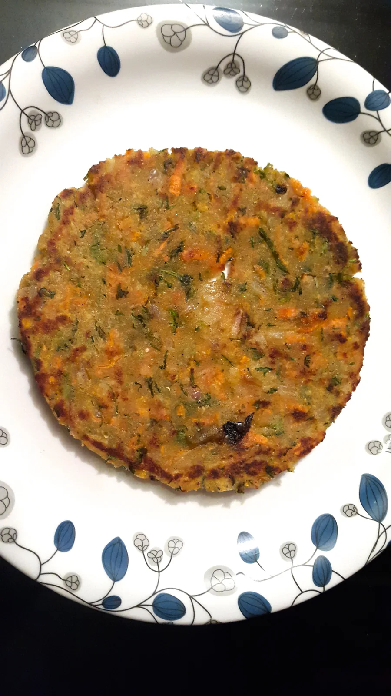
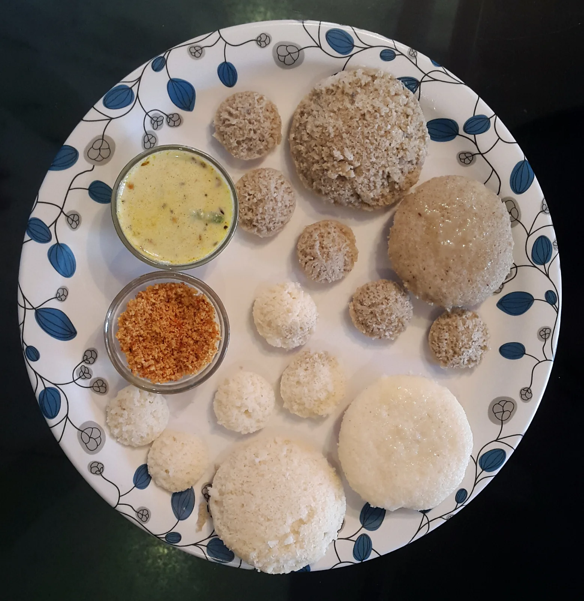

Disease Protocols
CURING or MITIGATING diseases using SIRIDHANYA MILLETS along with natural and commonly available spices, condiments, herbs and plant parts has proven that, when such knowledge is handed over in a simple form to common people, anyone can boldly utilize them to mitigate their ailments and set their systems right . Within a span of of 10- 16 weeks, most of the patients are able to lead a normal life. Thanks to the system of zero chemicals.
Here are a few examples of 'DISEASE-PROTOCOLS' that are widely followed and used by lakhs of people around India and many parts of the world. In Indian states like Karnataka, Telangana and Andhra pradesh, this precious and free knowledge has penetrated deep into every town, village and families in the remotest corners as people suffering from diseases like Osteo-arthritis, Hypertension, Diabetes mellitus, Thyroid dysfunctions, High cholesterol, Autism, PCOS, Auto immune diseases, Asthma and various forms of Cancer - are finding relief and cures.
There are 5 components of Disease protocols:
- Consumption of 2-3 spoons of cleanest, ORGANIC, Wood/cold pressed oils . First thing in the morning, with a gap of 40 minutes before ingesting decoctions & another 40 minute gap before breakfast. BUT this step is not for Cancer patients and patients with Liver and Pancreas diseases.
- Water based Decoctions made from Spices/ Condiments/ Leaves/ Parts of herbs to be taken in morning, afternoon and evening (Diseases like Cancer have specific decoctions in pre-lunch/afternoon times)
- Use all 5 SIRIDHANYA MILLETS as staple food (breakfast, lunch & dinner) as per specific recommendations.
- Use of Natural nutritional supplements like Til/Sesame seed laddus, Pure Palm jaggery, Plant based milks, use of Beets, carrots, Gooseberries/Amla etc
- Following a list of Dos and Do nots to stall the disease progression and get best results
INSTRUCTIONS:
- KEEP AWAY : White Rice, Wheat, Maida/flour products, Egg, ALL kinds of Meat, White sugar, Milk (Home made Curd/yoghurt are acceptable) , processed food, Factory made foods, Instant Breakfast cereals, Packed foods, Artificial sweeteners and artificial sweetened products, Bakery foods Chocolates, sugared candies and other cereals with very low dietary fibre content.
- Do not use refined oils and refined flours for cooking.
- Keep away coffee, tea, Alcohol and other stimulants.
- Do not use NON STICK FRYING PANS or Aluminum vessels and DON'T use Plastic Vessels for storing water, pickles or food.
- USE PLENTY of Organic vegetables and Leafy green vegetables and moderate quantity of fruits. Remember to pre-soak vegetables, fruits and green leaves in Tamarind water for 10-15 minutes and wash throughly before use.
- Usage of ORGANIC PURE PALM JAGGERY Instead of WHITE SUGAR is required .
- Special Tropical fruits like Gauva, Soursop/Graviola, Citrus fruits etc., are supposed to have useful ingredients to fight cancer. Use them. Eat local fruits.
- Cancer patents should eat 3 - 5 tablespoons of slightly roasted SESAME seeds as 'LADDU' along with PURE ORGANIC PALM JAGGERY (nuvvu undalu) - twice a week.
- 15 minute Meditation, exposure to EARLY MORNING SUN, Mental peace, Yoga if possible and are highly recommend. 75 minutes of walk(even slowly) is a must if you can. Exposure to early morning and evening Sunlight for 45 minutes useful.
- Use copper vessels (Cleaned every day) for storing drinking water. OR use 'Copper sheet' for cleansing water(Even water from most expensive water filter needs this treatment)
PREPARATION OF DECOCTIONS/KASHAYA:
Make the leaves/ roots/ plant parts into chopped, small parts (6 leaves if the leaves are big and fist full of leaves if leaves are small).
The chopped parts and leaves are to be added to 1.5 -2 cups of water. Boil on medium heat for about 4 minutes, allowing it to be infused into the water. Filter the contents. Consume it when luke-warm.
Ideally, the kashayas should be consumed without any added jaggery. But one may add few drops of liquid PURE PALM JAGGERY for taste. Do not add sugar.
The best time to consume the KASHAYA is early MORNING, ON EMPTY STOMACH. Also one hour before lunch and dinner.
Cancer patients have specific decoctions in the afternoon.(a total of 3 times a day)
Consuming ORGANIC Wood/Cold Pressed oils
For all patients and healthy adults, It is recommended to consume 2-3 teaspoons of organic wood/cold pressed clean oils first thing in the morning. This helps in cleansing various glands in the body. Oils like Groundnut oil, Sesame oil, Niger oil, Safflower oil: are used ONE WEEK EACH IN ROTATION. After 40 minutes gap, decoctions may be ingested.
A total of 4-5 month duration is enough for this recommendation.
PREPARATION of SIRIDHANYA MILLETS
The SIRIDHANYA MILLETS are to be soaked for at least 5-6 hours prior to cooking. They can be made into rice, porridge, upma, Biryani, Roti, Dosa, Idli, pongal, Bisibelle bath, Pulav and various other dishes. The recipes can be referred in the previous pages of this website to know its preparations.



'AMBALI or FERMENTED Millet BROTH' & ITS IMPORTANCE
Dr Khadar always suggests for great results, using recommended Siridhanya as 'Ambali' or 'mashed broth' for first 10 weeks if you are seriously fighting any disease. (Importantly do not throw away any solid/liquid part of it)
Siridhanya 'Ambali' is like a boon to our health.
Only if our Digestive system is perfect, we can achieve optimum disease resistance. Ambali helps us in this direction.
Ambali will help you to mitigate most diseases. By consuming fermented Ambali, we can absorb Vitamins and minerals satisfactorily and also improve microbial populations in our systems and achieve best possible Disease resistance.
Even the advanced patients of any disease or beginners who want to mitigate any disease are advised to take siridhanya millets as Ambali and make Ambali the staple food for first 10-12 weeks to get quick results. As per recommended millets, Ambali may be used, along with decoctions/kashaayas and other guidelines.
Dr Khadar analyzed and made it clear to us, that the origin of most diseases we face today lies in--
a) Microbial imbalance
b) Glucose imbalance and
c) Hormonal imbalance.
Ambali largely helps in clearing the problem of microbial imbalance in our body. We must include it at least once a day in our meals.
Ambali or The Semi liquid fermented broth can replace your staple food totally and with this Ambali, all your 3 meals should be taken along with curries, Dal/Lentil, Butter milk and a pinch of Pickle or chutney etc. Thus, we create the right pre-biotic and pro-biotic conditions in side our body and benefit from it.
Importantly do not mix any vegetable or curd or Butter milk while preparing Ambali, at any stage. Some people have a habit of adding curd or curd/butter milk with onions, carrot to cooked & mashed millet and then go for fermentation. But Dr Khadar advises that you should not mix any thing else with millet. Each millet encourages its own kind of bacteria to grow in the fibre of its grains, while making Ambali. This must be encouraged with out any interference.
You may use whole grain or broken grains(use a mixer with the millet grains for 30 seconds for a 'rough grind') or flour of Siridhanya Millets to make Ambali. People with sensitive stomachs and new eaters of Siridhanya may choose flour to make Ambali.
While pre-soaking your millet material, add 1;6 to 1:10 water and cook more than usual. Further mash the solids to make the semi liquid broth. Then ferment this for 8 to 12 hours, by closing the vessel's mouth with Cotton cloth or hand crafted cloth which provides excellent aeration and lets in only useful bacteria. Use earthen pots or terracotta vessels to ferment the Ambali. The pores in the pot walls will be beneficial to the process. At any stage, never use Aluminium pots.
In Summer months, the Fermentation is much faster. To control its speed, put your Ambali in another bigger pot filled with wet sand. Temperature stays under control and fermentation will go normally. Fermentation period should not cross 18 hours in any season.
'Can we reheat the Ambali when ever we come back to it'?
No, you should not reheat, since such a reheating process harms the bacteria in broth. You must let all these processes happen at room temperature, normally.Then only the micro biome in your intestines gets the boost and positive results will come through this system.
For new consumers, a point to remember : Siridhanya like Kodo millet and Browntop millet let out some color in to the soaked water. Do not be apprehensive thinking that it is artificially 'added' color. No, it is natural. Kodo Millet gives out Brick Red color and Browntop millet gives our green tinge to the water. So, wish you all the health from Unpolished Siridhanya.
Various DISEASES WITH PROTOCOLS
Various CANCERS WITH PROTOCOLS
Various DECOCTIONs/
KASHAYAs
Disease protocols are available for more than 100 diseases....
Write to mysirilokam@gmail.com for pdf books.
- Uterine fibroid
- Diabetes
- Thyroid,PCOd,Fibroids and Hormone problems
- High Blood Pressure
- Creatinine & Kidney
- Endometriosis
- Weight loss/Obesity
- For gaining weight
- Asthma & TB
- Parkinson's
- Stones in Kidney
- HIV
- IBS
- Chikkungunya
- To increase platelets count
- Paralysis
- Acidity/Gastric troubles
- Eye problems
- Increased memory
- Gastric troubles& acidity
- Joints inflammation, swelling
- Nerve Diseases
- Myasthenia gravis
- SLE or LUPUS
- ESR
- Ankylosing Spondylosis
- Rhuematoid arthritis
- L4, L5 problem
- Cleansing Liver, Kidney & Gout
- Urinary Infections
- Low platlet count
- INFERTILITY
- Paralysis
- Muscular Dystrophy
- Heart problems
- Alzheimer
- Convulsions
- Varicose veins
- Infertility
- Constipation, Piles
- Inflamatory bowel diseases like Crohn's diseases
- Colitis
- Prostrate
- Liver diseases ...... and many more.
For any doubts or queries: Contact Millet Zone via MAIL- mymilletzone@gmail.com
Links from this page
Content captured 25 October 2026. Reorganized for reading; purchase-related material excluded.